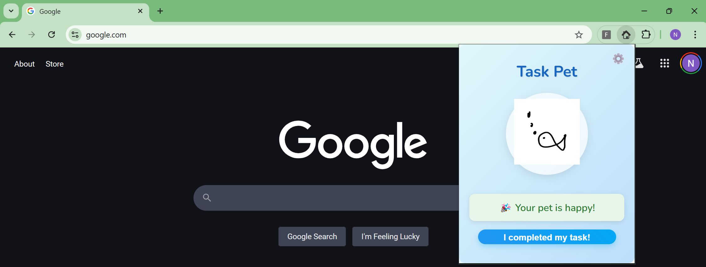

To do list Tamagotchi pet
[In progress] This is a pet that can only be fed by doing a daily task. This little tool is designed to keep you in check!
I am still working on it but I have uploaded the draft. You can set a time in settings for the deadline. If you miss a day your pet dies.
JavaScript
HTML
CSS